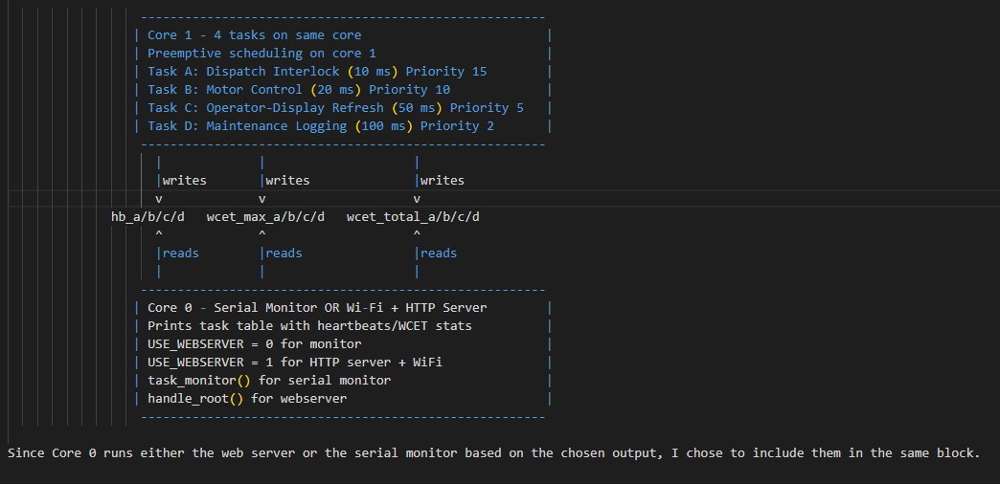

A real-time embedded control system built on Wokwi using FreeRTOS. This portfolio is based on Application 2, demonstrating deterministic scheduling, task prioritization, WCET analysis, and preemption detection for theme park and ride control applications
This project represents the final integration capstone for EEL 4775 Real-Time Systems. The system combines concepts developed throughout the semester into one embedded application executing on an ESP32 running FreeRTOS.
The controller simulates an industrial ride control system where multiple periodic tasks monitor safety conditions, regulate motor operation, update operator displays, maintain diagnostic logs, and respond immediately to emergency stop events.
Four periodic FreeRTOS tasks execute using fixed priorities to simulate a real-time industrial control application.
Worst-case execution times were measured directly on Wokwi and used for schedulability analysis.
Each task executes at a defined period ranging from 10 ms to 100 ms while meeting its deadline.
Processor utilization was evaluated using RMS, EDF, and Response-Time Analysis.
Execution timing and heartbeat information are displayed through the serial monitor and web dashboard.

| Task | Period | WCET | Priority |
|---|---|---|---|
| Dispatch Interlock Check | 10 ms | 584 μs | 15 |
| Motor Speed Control | 20 ms | 3913 μs | 10 |
| Operator Display Refresh | 50 ms | 9085 μs | 5 |
| Maintenance Logging | 100 ms | 19262 μs | 2 |
| Potential Hazard | Mitigation |
|---|---|
| Missed dispatch safety checks | Highest priority task executes every 10 ms. |
| Motor control delays | 20 ms periodic control task with deterministic scheduling. |
| Display update latency | Lower priority than control tasks to prevent interference. |
| High processor utilization | Verified using measured WCET values and utilization analysis. |
| Background logging interference | Maintenance logging executes as the lowest-priority task. |
Replace the placeholders below with your final YouTube video and Wokwi project.